[REVIEW] Món ngon Đà Lạt: Gợi ý 25 đặc sản không nên bỏ lỡ
![[REVIEW] Món ngon Đà Lạt: Gợi ý 25 đặc sản không nên bỏ lỡ](../uploads/blogs/du_lich_da_lat_thang_4_1775629294057.webp)
Mục lục bài viết
-
1. Món ngon Đà Lạt không thể bỏ qua: Top 8 món ăn siêu hấp dẫn cho chuyến vi vu phố núi
- 1.1. Bánh căn – Món ngon Đà Lạt được yêu thích nhất
- 1.2. Bánh tráng nướng – Món ngon Đà Lạt không thể bỏ lỡ
- 1.3. Xắp xắp – Món ngon Đà Lạt ăn lạ miệng cho tín đồ ẩm thực
- 1.4. Kem bơ – Món ngon Đà Lạt đặc sản mát lạnh ngày hè
- 1.5. Dâu tây lắc – Ăn vặt Đà Lạt chua cay hấp dẫn
- 1.6. Sữa đậu nành – Món ngon Đà Lạt cho buổi tối se lạnh
- 1.7. Cháo trắng lá dứa – Món ăn đêm Đà Lạt dân dã, ấm lòng
- 1.8. Bánh cuốn ống – Món ăn dân dã đặc trưng chợ đêm Đà Lạt
-
2. Món ngon Đà Lạt cho bữa sáng: Ăn gì để bắt đầu ngày mới trọn vị?
- 2.1. Phở Đà Lạt – Món ăn ấm lòng trong sớm mai se lạnh
- 2.2. Bánh mì xíu mại – Món ăn sáng “quốc dân” ở Đà Lạt
- 2.3. Hủ tiếu Đà Lạt – Bữa sáng đậm đà, dễ ăn
- 2.4. Bún bò Đà Lạt – Món ngon đậm vị cho bữa sáng
- 2.5. Cháo ếch Singapore – Lựa chọn mới mẻ cho buổi sáng ở Đà Lạt
- 2.6. Bánh ướt lòng gà – Món ăn sáng đặc sản trứ danh
- 3. Ăn gì ở Đà Lạt vào buổi trưa?
- 4. Tối ăn gì ở Đà Lạt?
Du lịch Đà Lạt ăn gì? Thành phố sương mù sẽ khiến bạn ngập tràn lựa chọn – từ những món ăn vặt hấp dẫn, bữa sáng đậm đà hương vị, cho đến các bữa trưa chất lượng hay lẩu, nướng thơm lừng cho buổi tối se lạnh.

Không khó để giải đáp thắc mắc “Đà Lạt có gì ngon?”, bởi nơi đây từ lâu đã nổi tiếng là thiên đường ẩm thực với vô vàn món ngon trứ danh. Ẩm thực chính là một phần không thể thiếu tạo nên sức hút du lịch của Đà Lạt – bên cạnh khí hậu dịu mát quanh năm và phong cảnh nên thơ hữu tình.
1. Món ngon Đà Lạt không thể bỏ qua: Top 8 món ăn siêu hấp dẫn cho chuyến vi vu phố núi
Ẩm thực Đà Lạt luôn khiến du khách mê mẩn với sự đa dạng và độc đáo. Từ những món ăn truyền thống đến các món vặt sáng tạo, tất cả đều mang đậm phong vị riêng của xứ sở ngàn hoa. Nếu bạn đang băn khoăn ăn gì ở Đà Lạt ngon rẻ thì đừng bỏ qua danh sách những món ngon Đà Lạt dưới đây nhé!
1.1. Bánh căn – Món ngon Đà Lạt được yêu thích nhất
Bánh căn là một trong những đặc sản nổi tiếng của Đà Lạt. Món ăn gây thương nhớ bởi lớp vỏ bánh giòn rụm bên ngoài, phần nhân mềm béo bên trong kết hợp cùng nước chấm xíu mại nóng hổi, thơm lừng.
Gợi ý địa chỉ quán bánh căn ngon ở Đà Lạt:
-
Bánh căn Lệ: 27/44 Yersin, P.10, TP. Đà Lạt
-
Quán Cây Bơ: 56 Tăng Bạt Hổ, P.1, TP. Đà Lạt
-
Quán Hoa: 12 Phan Đình Phùng, TP. Đà Lạt
-
Quán Xuân An: 01 Nhà Chung, P.3, TP. Đà Lạt

1.2. Bánh tráng nướng – Món ngon Đà Lạt không thể bỏ lỡ
Bánh tráng nướng, thường được ví như “pizza Đà Lạt”, là món ăn vặt không thể bỏ qua mỗi khi dạo chơi chợ đêm. Lớp bánh giòn tan kết hợp với các topping như trứng, mỡ hành, xúc xích, phô mai tạo nên hương vị hấp dẫn khó cưỡng.
Địa chỉ bánh tráng nướng ngon ở Đà Lạt:
-
Quán Dì Đinh: 26 Hoàng Diệu, TP. Đà Lạt
-
Quán Cô Phượng: 69C Nguyễn Văn Trỗi, TP. Đà Lạt
-
Quán Bà Khùng: 61 Nguyễn Văn Trỗi, TP. Đà Lạt

1.3. Xắp xắp – Món ngon Đà Lạt ăn lạ miệng cho tín đồ ẩm thực
Xắp xắp là món gỏi khô bò phiên bản Đà Lạt, gồm đu đủ bào sợi, gan bò, bò khô, rau thơm và nước mắm pha chua ngọt. Món ăn có vị thanh mát, thích hợp thưởng thức buổi chiều se lạnh.
Quán bán xắp xắp ngon ở Đà Lạt:
-
Xắp xắp Bà Triệu: 23/2 Bà Triệu, TP. Đà Lạt
-
Cô Năm Quán: 49/5 Nguyễn Đình Chiểu, P.9, TP. Đà Lạt
-
Quán 99: 99 Nguyễn Văn Trỗi, TP. Đà Lạt
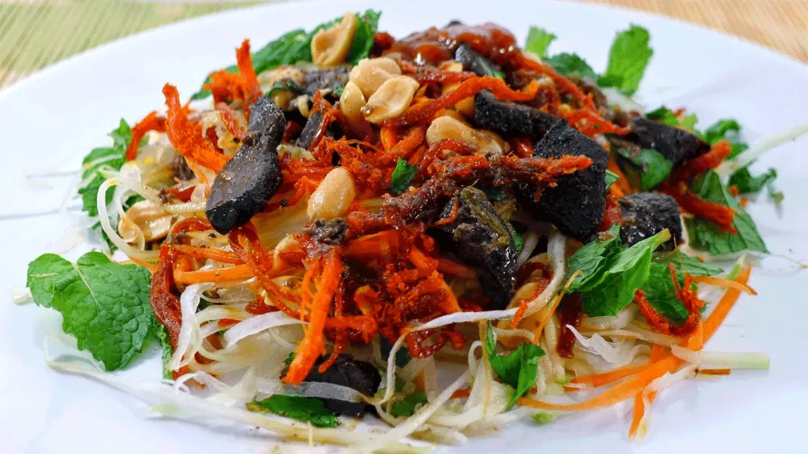
1.4. Kem bơ – Món ngon Đà Lạt đặc sản mát lạnh ngày hè
Kem bơ Đà Lạt nổi tiếng với vị béo ngậy, sánh mịn và hương thơm đặc trưng. Sự kết hợp giữa bơ chín và kem dừa tạo nên món tráng miệng ngon miệng, hấp dẫn.
Gợi ý quán kem bơ ngon ở Đà Lạt:
-
Thanh Thảo: 76 Nguyễn Văn Trỗi, TP. Đà Lạt
-
Nari: 74C Nguyễn Văn Trỗi, TP. Đà Lạt
-
Kem Phụng: 97A Nguyễn Văn Trỗi, P.2, TP. Đà Lạt

1.5. Dâu tây lắc – Ăn vặt Đà Lạt chua cay hấp dẫn
Dâu tây Đà Lạt không chỉ ăn tươi mà còn được chế biến thành món dâu tây lắc với muối ớt, đường và một chút nước cốt tắc. Vị chua – cay – ngọt hòa quyện khiến món ăn trở nên “gây nghiện”.
Nơi bán dâu tây lắc ngon:
-
Chợ Đà Lạt (Nguyễn Thị Minh Khai, P.1)

1.6. Sữa đậu nành – Món ngon Đà Lạt cho buổi tối se lạnh
Sữa đậu nành nóng là thức uống gắn liền với đêm Đà Lạt. Vị ngọt thanh, thơm béo từ đậu nành nguyên chất sẽ khiến bạn ấm lòng giữa cái lạnh phố núi.
Địa chỉ bán sữa đậu nành ngon ở Đà Lạt:
-
Chợ đêm Đà Lạt
-
64 Tăng Bạt Hổ, TP. Đà Lạt
-
Góc đường 3 Tháng 2 – Hải Thượng Lãn Ông

1.7. Cháo trắng lá dứa – Món ăn đêm Đà Lạt dân dã, ấm lòng
Khi dạo chơi Đà Lạt về khuya, một tô cháo trắng lá dứa đậu xanh nóng hổi ăn kèm trứng muối hoặc cá kho sẽ giúp bạn no bụng và ấm người.
Gợi ý quán ăn đêm ngon ở Đà Lạt:
-
Tô Cháo Đêm: 112 Phan Đình Phùng, TP. Đà Lạt
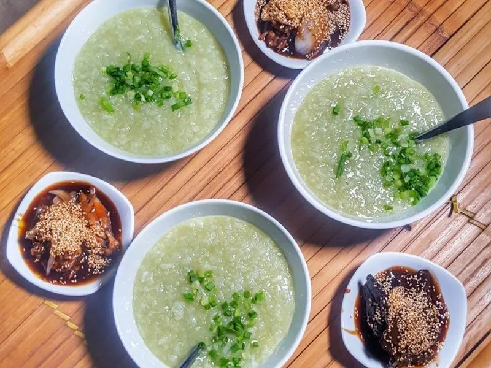
1.8. Bánh cuốn ống – Món ăn dân dã đặc trưng chợ đêm Đà Lạt
Bánh cuốn ống là món ăn vặt dân dã với nguyên liệu đơn giản như gạo nếp, đậu xanh, dừa nạo… hấp trong ống tre. Vị ngọt nhẹ và thơm mùi lá dứa khiến món ăn trở nên đặc biệt.
Địa chỉ:
-
Chợ đêm Đà Lạt (Nguyễn Thị Minh Khai, P.1)
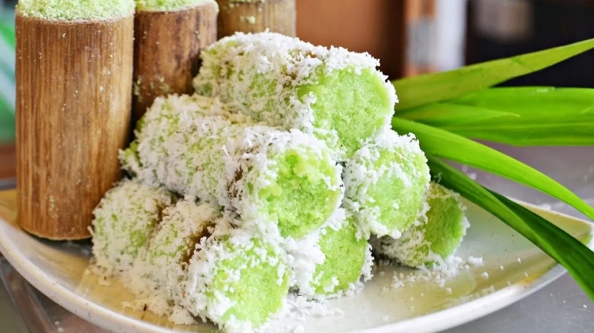
2. Món ngon Đà Lạt cho bữa sáng: Ăn gì để bắt đầu ngày mới trọn vị?
Không khó để tìm món ngon Đà Lạt vào buổi sáng, khi khắp các góc chợ, vỉa hè đều là những quán ăn nghi ngút khói, thơm lừng mùi đồ ăn. Từ món truyền thống đến đặc sản địa phương, Đà Lạt có đủ lựa chọn cho một buổi sáng ngon miệng và đủ chất. Dưới đây là các món ăn sáng nên thử khi ghé thăm thành phố sương mù.
2.1. Phở Đà Lạt – Món ăn ấm lòng trong sớm mai se lạnh
Phở Đà Lạt là phiên bản mang phong cách riêng với nước dùng ngọt thanh, béo nhẹ, ăn kèm bánh phở mềm và thịt bò thái mỏng. Trong không khí se lạnh đặc trưng của cao nguyên, thưởng thức một tô phở nóng hổi là trải nghiệm tuyệt vời.
Gợi ý quán phở ngon ở Đà Lạt:
-
Phở Hiếu: 103 Nguyễn Văn Trỗi, P.2
-
Phở Thưng: 02 Nguyễn Văn Cừ, P.1
-
Phở Bằng: 18 Nguyễn Văn Trỗi, P.1
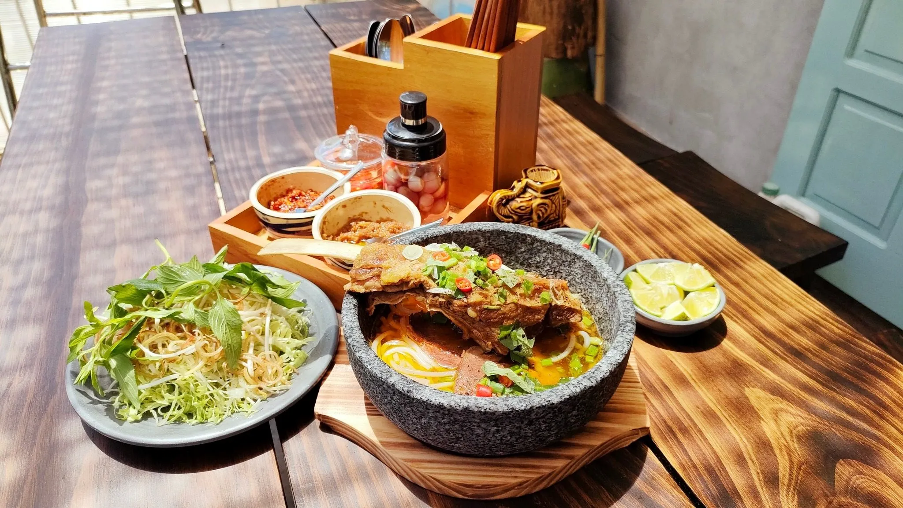
2.2. Bánh mì xíu mại – Món ăn sáng “quốc dân” ở Đà Lạt
Bánh mì xíu mại Đà Lạt là món ngon không thể thiếu trong danh sách ẩm thực sáng. Bánh mì giòn rụm chấm với chén xíu mại nóng hổi, thơm lừng, đậm đà, khiến du khách ăn một lần là nhớ mãi.
Gợi ý quán bánh mì xíu mại:
-
Xíu mại Hoàng Diệu: 26 Hoàng Diệu
-
Quán Cô Sương: 14 Ánh Sáng, P.1
-
Xíu mại Yersin: 10 Yersin, P.10
-
Xíu mại Bùi Thị Xuân: 79 Bùi Thị Xuân

2.3. Hủ tiếu Đà Lạt – Bữa sáng đậm đà, dễ ăn
Một tô hủ tiếu nóng hổi với nước dùng trong, ngọt thanh cùng sườn, thịt nạc, tóp mỡ giòn giòn là lựa chọn lý tưởng trong tiết trời se lạnh. Đây là món ăn được nhiều người địa phương yêu thích vào buổi sáng.
Quán hủ tiếu ngon tại Đà Lạt:
-
Quán Tàu Cao: 217 Phan Đình Phùng
-
Vĩnh Lợi: 10 Hải Thượng
-
Hoàng Hải: 07 Bà Triệu
-
Quán Trang: 22 Trần Lê
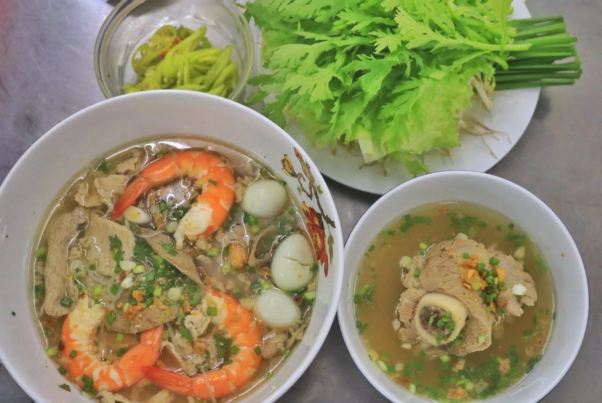
2.4. Bún bò Đà Lạt – Món ngon đậm vị cho bữa sáng
Không giống bún bò Huế, bún bò Đà Lạt mang hương vị riêng với nước dùng thanh nhưng đậm đà, cay nhẹ, kết hợp với rau sống tươi xanh và thịt bò mềm. Đây là món ăn sáng giúp bạn nạp năng lượng hiệu quả.
Gợi ý quán bún bò:
-
Quán Thiên Trang: 02B Hồ Tùng Mậu
-
Quán Vy Vy: 202/3 Phan Đình Phùng
-
Quán Út Vân: Ấp Ánh Sáng
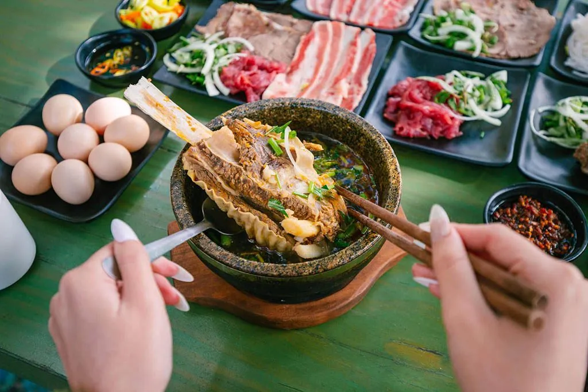
2.5. Cháo ếch Singapore – Lựa chọn mới mẻ cho buổi sáng ở Đà Lạt
Nếu bạn muốn thay đổi khẩu vị, cháo ếch Singapore là món đáng thử. Cháo trắng mịn ăn kèm với thịt ếch kho đậm đà, mang đến hương vị vừa lạ vừa quen giữa không khí lành lạnh của Đà Lạt.
Gợi ý quán cháo ếch:
-
Cháo ếch Nguyễn Văn Cừ: 2/3 Nguyễn Văn Cừ
-
Cháo ếch 151: 151 Bùi Thị Xuân
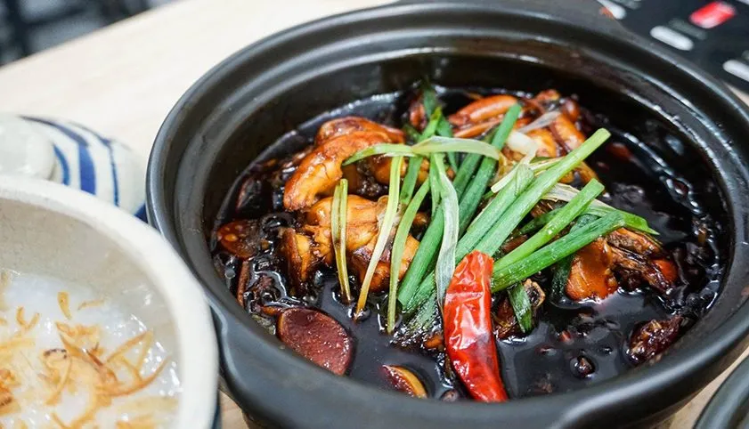
2.6. Bánh ướt lòng gà – Món ăn sáng đặc sản trứ danh
Bánh ướt lòng gà Đà Lạt là món ăn độc đáo với bánh ướt dẻo dai, thịt gà luộc mềm, lòng gà giòn, ăn kèm nước mắm chua ngọt rất bắt vị. Món này không chỉ được yêu thích vào buổi sáng mà còn cả trưa và tối.
Địa chỉ quán bánh ướt lòng gà nổi tiếng:
-
Quán Long: Hẻm 202 Phan Đình Phùng
-
Quán Trang: 15F Tăng Bạt Hổ
-
Quán Hằng: 39 Đồng Tâm

3. Ăn gì ở Đà Lạt vào buổi trưa?
Khi đến Đà Lạt và băn khoăn ăn gì vào buổi trưa, bạn sẽ ngạc nhiên bởi sự phong phú trong ẩm thực nơi đây. Từ những món ăn truyền thống đậm đà hương vị cao nguyên đến các lựa chọn nhẹ nhàng, đầy đủ dinh dưỡng, bữa trưa ở Đà Lạt luôn làm hài lòng mọi thực khách. Dưới đây là 6 gợi ý không thể bỏ qua nếu bạn còn đang phân vân ăn gì ở Đà Lạt buổi trưa.
3.1. Cơm niêu Đà Lạt – Bữa trưa đậm đà, ấm cúng
Cơm niêu Đà Lạt là lựa chọn tuyệt vời cho bữa trưa đầy đủ dưỡng chất. Cơm niêu được nấu chín tới, ăn kèm với các món mặn, canh và rau đặc trưng vùng cao như bông cải, atiso, cá suối nướng… Tất cả tạo nên một bữa ăn vừa ngon miệng, vừa mang đậm hương vị phố núi.
Gợi ý quán cơm niêu ngon ở Đà Lạt:
-
Cơm niêu Hương Trà – Đường Nguyễn Thái Học, TP. Đà Lạt
-
Cơm niêu Nam Đô – Số 06 Nguyễn Thị Minh Khai, TP. Đà Lạt
-
Quán Ba Mẹ Con – 1C Hoàng Hoa Thám, Phường 10, TP. Đà Lạt
-
Cơm niêu Kim Gia – 65 Quang Trung, Phường 9, TP. Đà Lạt
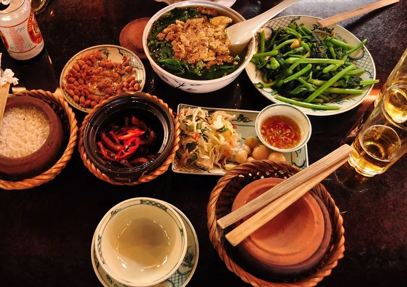
3.2. Bánh canh Đà Lạt – Nhanh gọn mà vẫn đủ chất
Nếu bạn muốn có một bữa trưa nhẹ nhàng nhưng vẫn đầy đủ năng lượng thì bánh canh Đà Lạt là lựa chọn lý tưởng. Tô bánh canh nóng hổi với nước dùng ngọt thanh, topping thịt heo, chả cá, chân giò hoặc trứng cút sẽ giúp bạn vừa no bụng vừa hài lòng.
Quán bánh canh ngon nên thử:
-
Quán Bà Hường – Lầu 1 khu B, chợ Đà Lạt
-
Bánh canh Xuân An – 15A Nhà Chung, Phường 3, TP. Đà Lạt
-
Bánh canh cá lóc An – 23/2 Trần Phú, Phường 3, TP. Đà Lạt
-
Quán chú La – 148 Bùi Thị Xuân, Phường 2, TP. Đà Lạt
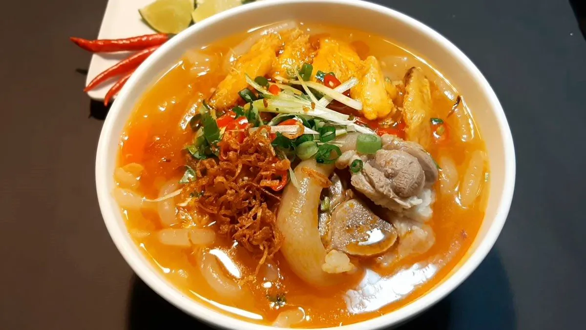
3.3. Gà đập lu – Món ngon lạ miệng cho bữa trưa
Gà đập lu, hay còn được biết đến với tên gọi gà bốc hỏa, là món ăn độc đáo hấp dẫn cả về hương vị lẫn cách trình bày. Gà được nướng trong lu, sau đó “đập lu” để trình bày ngay tại bàn, khiến món ăn vừa thơm vừa bắt mắt. Thịt gà dai, đậm vị ăn kèm với sốt chua cay rất đưa cơm.
Quán gà đập lu nên ghé:
-
Hương Quán – 47B Trần Bình Trọng, Phường 5, TP. Đà Lạt
-
Quán Mộc Nữ – 11 Thông Thiên Học, Phường 2, TP. Đà Lạt
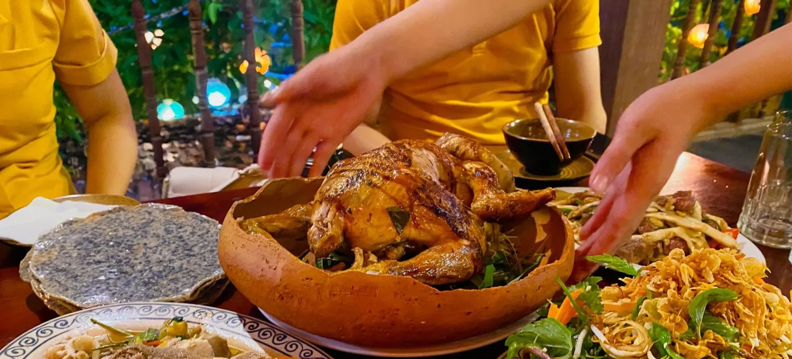
3.4. Nem nướng Đà Lạt – Món ăn trưa đặc trưng
Không thể bỏ qua nem nướng Đà Lạt nếu bạn muốn có một bữa trưa vừa ngon, vừa tiện lợi. Nem được nướng vàng ươm, ăn kèm bánh tráng, rau sống và nước chấm đặc biệt tạo nên hương vị rất riêng, khiến ai ăn một lần cũng nhớ mãi.
Địa chỉ thưởng thức nem nướng ngon:
-
Nem nướng Bà Hùng – 254 Phan Đình Phùng, TP. Đà Lạt
-
Quán Bà Nghĩa – 04 Bùi Thị Xuân, TP. Đà Lạt
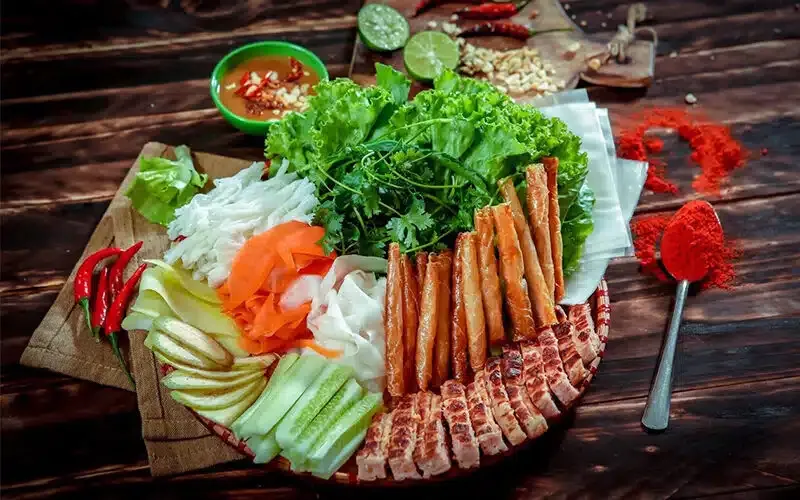
3.5. Gà nướng cơm lam – Combo trưa đậm đà hương vị núi rừng
Kết hợp giữa gà nướng được ướp đậm vị, nướng thơm lừng và cơm lam dẻo mềm nấu trong ống tre, món ăn này mang đậm chất núi rừng Tây Nguyên. Đây là một trong những món được du khách lựa chọn nhiều nhất khi tìm kiếm ăn gì ở Đà Lạt buổi trưa.
Gợi ý quán cơm lam gà nướng Đà Lạt:
-
Tiệm nướng Lưng Chừng Đồi – Hẻm 1 Đặng Thái Thân, Phường 3, TP. Đà Lạt
-
Quán Cô Sinh – 178 Hùng Vương, TP. Đà Lạt
-
Quán Hương Rừng – 6B Ankroet, Đa Phú, Phường 7, TP. Đà Lạt
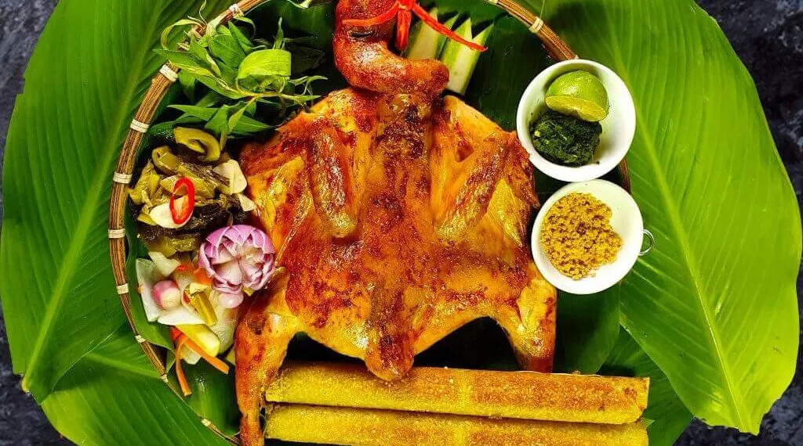
4. Tối ăn gì ở Đà Lạt?
Sau một ngày dạo chơi khám phá Đà Lạt với thiên nhiên trong lành và không khí mát lạnh, buổi tối chính là thời điểm lý tưởng để bạn thư giãn bên bàn ăn, tận hưởng hương vị ẩm thực đặc trưng của phố núi. Và nếu bạn đang phân vân nên ăn tối ở đâu giữa vô vàn lựa chọn, thì Tiệm Nướng & Chill Xóm Lèo chính là điểm hẹn không thể bỏ qua.
4.1. Tiệm Nướng & Chill Xóm Lèo – Ăn tối chill giữa lòng Đà Lạt
Nằm nép mình giữa rừng thông, Tiệm Nướng & Chill Xóm Lèo là một trong những quán nướng Đà Lạt có không gian view “đắt giá” nhất. Từ tiệm, bạn có thể ngắm trọn hoàng hôn buông xuống, tàu lửa len lỏi qua rừng, và nhà lồng Đà Lạt rực sáng về đêm – tất cả tạo nên một khung cảnh nên thơ khó quên.
Không chỉ gây ấn tượng bởi cảnh sắc, Tiệm Nướng & Chill Xóm Lèo còn mang đến trải nghiệm ẩm thực ấm cúng với menu đồ nướng đa dạng, từ thịt bò, hải sản, đến rau củ tươi Đà Lạt – tất cả được ướp vị đậm đà, nướng trực tiếp trên bếp than hồng thơm lừng. Không gian mở, ghế gỗ, đèn vàng tạo cảm giác thân thuộc, gần gũi mà vẫn rất “chill”.
Đây cũng là địa điểm lý tưởng để ăn tối Đà Lạt cùng người thương, nhóm bạn hoặc gia đình, nơi bạn có thể vừa ăn vừa chuyện trò, thưởng ngoạn cảnh đẹp không nơi nào có được.
📍 Địa chỉ: 113 Huỳnh Tấn Phát, Phường 11, Đà Lạt, Lâm Đồng 67000
🔥 Đặc biệt: View hoàng hôn – Tàu lửa – Nhà lồng cực chill.
👉 Đặt bàn: Fanpage
☎️ Hotline: 076.45.27.336 – 08.99.42.84.34 – 0902.91.22.40
📍 Chỉ đường: Xem bản đồ Google Maps

Nếu bạn đang băn khoăn tối ăn gì ở Đà Lạt vừa ngon vừa có không gian đẹp để sống ảo và thư giãn, thì Tiệm Nướng & Chill Xóm Lèo chắc chắn là điểm dừng chân hoàn hảo cho buổi tối đáng nhớ tại thành phố sương mù.
Đà Lạt không chỉ nổi tiếng bởi phong cảnh hữu tình, khí hậu dễ chịu mà còn khiến du khách say mê bởi nền ẩm thực phong phú, đặc sắc. Dù là món ăn vặt đơn giản nơi chợ đêm, bữa sáng ấm lòng trên vỉa hè, hay những món nướng hấp dẫn giữa chiều hoàng hôn se lạnh – mỗi hương vị đều góp phần tạo nên một Đà Lạt rất riêng, rất đáng nhớ. Nếu có dịp ghé thăm thành phố sương mù, đừng quên “dành bụng” để khám phá hết những món ngon Đà Lạt – bởi ẩm thực chính là một trong những lý do khiến du khách cứ mãi muốn quay trở lại nơi đây.